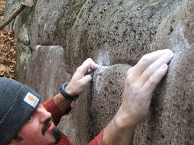

|
e-Grips Interview: Brent Quesenberry 
eG: Brent, how’d you get your start setting? What got you psyched about it? BQ: One day while climbing at the gym it dawned on me that these things bolted to the wall moved!, and that I could move them. I got psyched on it because I realized that I could force people to do what I wanted them to with the holds, and help them climb better, stronger, and with more energy. eG: You set at Peak Experiences in Virginia. This gym has some great history a lot of people might know about it, with a design by one of the top course setters from the 90s, Mike Pont. What stands out about the gym? BQ: The texture is pretty sweet, and you have to get psyched about nearly 50 foot tall walls. Over all the design is very user friendly for both strong climbers and beginners. Mike might argue that the original plans where way cooler than what actually got built but it has worked out well over the years. eG: You spend a good bit of time coaching kids for Peak Experience’s Youth Team. How long have you been coaching? How do you incorporate your route setting with coaching? BQ: This is my fourth year working with the kids, I really enjoy it. Being USA Climbing certified as a course setter has helped me coach kids with many aspects. It helps with everything from sequencing for on-sights and route reading to putting up “on-sight challenge” routes for them that are closer to what they will see at the Divisional and National level competitions. eG: You’re what some might call a workhorse setter, in the gym all the time - What keeps you psyched to set everyday? BQ: Fresh holds, theme sets, and my endless imagination. eG: Your gym sets by color of hold, rather than tape. Do you prefer this method all the time? Does this make for better routes, or are you limited? BQ: I was a little scared when I started setting at Peak, setting by color was a new to me, but I have gotten over that and prefer setting this way now over any other method that I have used. Setting by color makes for better routes in my book just for the fact that there is nothing on the wall but holds. The quality of the route is up to the setter not the holds though. Over the last 5 years I have been buying holds very methodically, I wanted to make sure that each color was as developed as the next and that the best holds where available for more than one route in each color. I have tried hard to ensure that any argument of setting by color is limiting, does not hold water here. eG: Tell us about your setting rotation program? How often do you change routes, and how do you keep track of them? Do you have an assessment system in place for judging how the route setting is? BQ: 12 routes a week…up and down. We track all of our routes two ways…first through a “quick reference” dry erase board that is updated weekly…and secondly electronically. We track every route through an excel spread sheet. This has helped us create a historical record of every route that we have put up or taken down in the last 4 years. This has helped us with everything…including scheduling, budgeting, cost analysis, and the hold inventory. We also have a regularly scheduled event every Tuesday, called “Climb Time” where all of the route setters and any Climbing Center member that wants to join us….gets together to climb all of the new routes for the week. We use this time to evaluate, grade, and tweak each new route as needed. We certainly solicit feedback from our members during the week. eG: You’ve been to clinics instructed by a lot of experienced routesetters – always looking to learn more. Give us a couple pieces of knowledge from someone who’s always a student – What have you picked up over the years? Who have you learned the most from? How do you apply what you see from others to your own setting? BQ: More often than not, it’s the little things that I pick up. Like want kind of wrench someone is using or how they ascend with a different system. I learn a lot by watching a setter’s process of setting a route from start to finish as well, just seeing what they do different than I do and trying to evaluate if that is better or worse. It did seem to be just these little things…That was until I met Chris Danielson! He and I have worked and set together a few times and I also took one of his USAC clinics last year. This guy is a genius, I learned more from him about truly forceful movement in three days than I had from any one else in 10 years! eG: You’ve been setting for so long, off and on – what tips do you have for new setters out there? How do you get to see the moves without having to climb the moves? BQ: LISTEN! Listen to the people that are teaching you, listen to the people that are climbing your routes! If all you ever hear is people hopping off of your route complaining about it being reachy…maybe it’s reachy. If all you ever hear is its awkward…maybe its awkward. Do not set a route thinking about yourself climbing it. Imagine someone climbing it that climbs the grade that you’re setting, and think about weather or not they would enjoy it. You have to remember that when you are setting commercially that you are setting for all of your gyms members and clients…everyone but yourself. How to see the moves??? That comes with time and experience…overtime you gain a perception of space and how the human body can move through it, as well as what is possible, or not. Lastly…never be scared to try new things, no matter how crazy they are. eG: Okay, let’s talk holds… you’ve seen and climbed on your fair share of them. What are some of your favorite shapes from companies of old? BQ: There was this really awesome hueco form Vertical Concepts that was always one of my favorites. I saw one at CATS on a recent trip to Boulder….it was hard to leave it on the wall. I also have a special place in my heart for the Boss…the original from Pusher. It was the first really obnoxiously huge feature hold, I can remember being worried that it was going to pull the t-nut through the wall! The first one that I ever got was a solid-none hollow backed resin hold. eG: What makes a hold a good hold? When you’re picking from a big pile – what is it about the best holds that makes them “work” best? BQ: Holds that are well defined work best for me. I like holds that are specifically a left or a right hand or something that is clearly matchable. I also love dual-tex they can really help force a sequence. I prefer urethane – for sure and new holds would be best. eG: And e-Grips… what is it about eG you love? Favorite sets? What would you like to see more of? BQ: The urethane is the best, and I love that I can order a set today that has been in the line for a while and it will be identical to the ones I already have. Pockets…I love the pockets! The Loaves are pretty rad too. Just keep shipping in the First Dibs holds and I will be happy! eG: Thanks Brent – have fun building routes! |